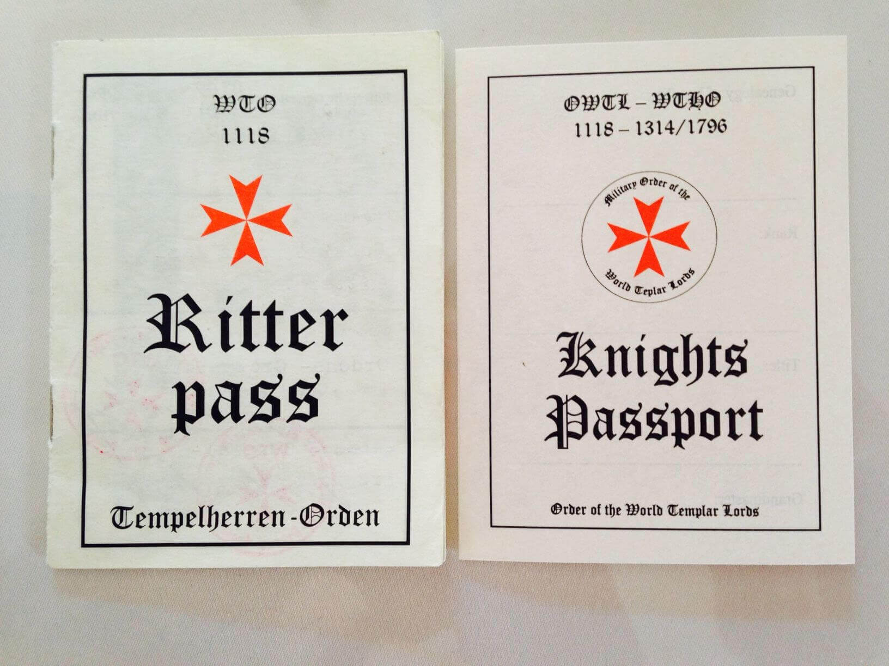

Gallery
Galleri
Galeriya
Galerie
Galerie
-

Neck Sash for a Page of the Order of the Templar Lords
Skærf for en Page eller Væbner
Neck Sash for a Page of the Order of the Templar Lords
Neck Sash pour une page de l'Ordre des Templiers Lords
Das Ordensband für einen Pagen oder Knappen
The Neck Sash for a Squire or Page of the Order of the Templar Lords is a silver medal, worn around the neck on a red, purple or white ribbon. It is awarded to the new entry into the Order through a small festivity held. Also the Knights Passport is issued and presented to the new member.
-
Neck Sash for a Knight of the Order of the Templar Lords
Skærf for en ridder fra det Order of The Templar Lords
Neck Sash for a Knight of the Order of the Templar Lords
Neck Sash pour un Chevalier de l'Ordre des Templiers Lords
Ordensband für einen Ritter des Ordens der Welt Tempelherren
The Neck Sash for a Knight of the Order of the Templar Lords is a red 8 pointed (Amalfi) Cross with gold border. All four parts of the Cross are held together by a gold Sun and is worn around the neck on a red, purple or white ribbon. It is, together with a sword, awarded to a new Knight at the dubbing ceremony. More Info about our Templar Cross, please refer to History.
-

Passport of the Order of the Templar Lords
Passport af Orden af World Templar Lords
Passport of the Order of the Templar Lords
Passeport de l'Ordre des Templiers Lords
Der Passport des Ordens der Welt Tempelherren
The Passport of the Order of the World Templar Lords is issued for a new Knight and holds information about him as well as dates of occasions of his life within the Order, such as dubbing, participations of ceremonies held and his latest rank and title. This document enables him to identify himself when traveling the world, while meeting other Templar Knights. So fare it enabled bearers to one or two free nights’ accommodation at fellow Knights.
-
Neck Sash for a Prior of the Order of the Templar Lords
Skærf for en Prior fra det Order at The World Templar Lords
Neck Sash for a Prior of the Order of the Templar Lords
Neck Sash pour une Prieur de l'Ordre des Templiers Lords
Das Ordensband für einen Prior des Welttempelherren Ordens
The Neck Sash for a Prior of the Order of the Templar Lords is a red cross with gold border and a gold crown on top. The four spikes are held together by a gold sun and is worn around the neck on a red, purple or white ribbon. It is awarded to a new Prior at a special ceremony.
-
Neck Sash for a Grand Prior of the Order of the Templar Lords
Skærf for en Stor Prior fra det Order at The Templar Lords
Neck Sash for a Grand Prior of the Order of the Templar Lords
Neck Sash pour un Grand Prieur de l'Ordre des Templiers Lords
Das Ordensband für einen Groß Prior des Ordens
The decoration for a Grand Prior of the Order of the Templar Lords is a red cross with gold border and a gold crown on top. The four red spikes are held together by a gold sun with four golden spikes and is worn on the left or right chest and by some members around the neck on a purple ribbon. It is awarded to a new Grand Prior at a special ceremony with Gala Dinner.